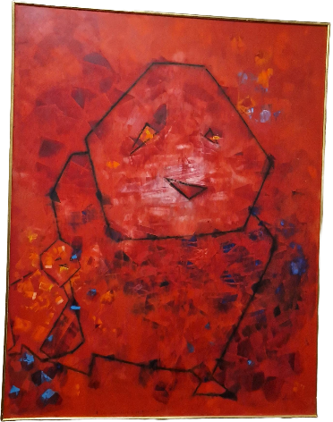
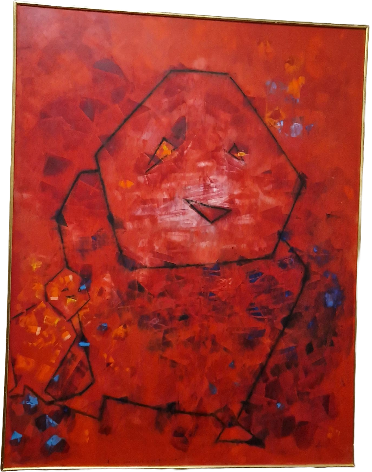

what-kind-of-bird-are-you
De kunstwerk is gtemaakt door Max Ernst in het jaar 1960, ik heb deze schilderij uitgekozen omda de schilderij kan bij ieder mens een andere vorm hebben vanuit de kijker.
De kunstwerk is gtemaakt door Max Ernst in het jaar 1960, ik heb deze schilderij uitgekozen omda de schilderij kan bij ieder mens een andere vorm hebben vanuit de kijker.
